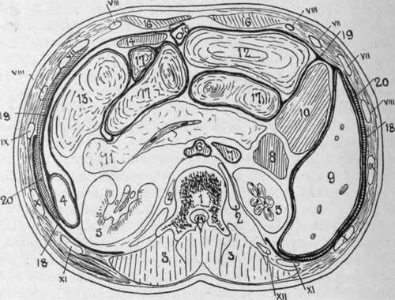
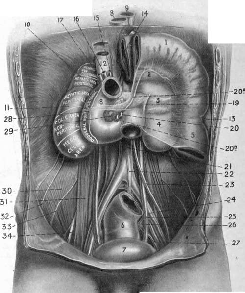

The Duodenum
Description
This section is from the book "Surgical Anatomy", by John A. C. MacEwen. Also available from Amazon: Surgical Anatomy.
The Duodenum
The Duodenum is described in three sections, the whole being nearly a foot in length, and describing a rough circle, or sometimes being of a U or V shape, with the apex downwards. It has been suggested that it acts as a kind of syphontap, to prevent regurgitation of gases into the stomach. It is wider than the jejunum, and only the first part is movable, and that slightly. The first is 2 inches long, and passes horizontally backwards and to the right on the level of the first lumbar vertebra to near the upper end of the right kidney. It is wider in the centre than at either extremity, the dilated portion- being called the duodenal antrum. The quadrate lobe of the liver and gall-bladder are above it, and the neck of the pancreas below it. At the junction of the first and second portions is the superior duodenal flexure. The second stage, about 3 inches long, descends in front of the inner border of the right kidney to the level of the third lumbar vertebra, and ends at the inferior duodenal flexure, where it joins the third portion. This inferior flexure is the lowest portion of the duodenum, and sometimes forms a considerable pouch. In front it is related to the transverse colon above and the small intestine below, and behind lie the kidney and renal vessels and right border of the inferior vena cava. The bile and pancreatic ducts open on a common papilla on the posterior and inner wall near the termination of this stage. The third stage is curved, running first across the spine from right to left at the level of the third lumbar vertebra, to which it is closely moulded, and then, turning upwards, runs along the left side of the spine to the level of the second lumbar vertebra, where it bends forwards, forming the duodeno-jejunal flexure, which is situated behind, and close to, the duodeno-pyloric junction. This stage is related behind to the vena cava, aorta, inferior mesenteric artery, left spermatic and renal vessels and ureter ; in front to the superior mesenteric vessels, small intestine, transverse mesocolon and stomach. It will be noted that the duodenum is closely related to many important structures which are liable to become involved in the various affections of this part. The relation of the second part to the kidney is thought to explain the sickness and vomiting associated wrth movable kidney, the duodenum being dragged upon and partially kinked. The peritoneal covering of the first portion is as in the stomach. The second stage is only covered by peritoneum in front, and is not covered where it is crossed by the transverse colon, and the third stage is covered in front, except where the superior mesenteric vessels cross it. The duodeno-jejunal junction is very firmly fixed, being held in position by a band of fibrous and unstriped muscular tissue descending from the left crus of the diaphragm, which also supports the mesentery (ligament or muscle of Treitz).
Fig. 26.-Transverse Section of the Abdomen at the Level of the First Lumbar Vertebra.
(After Braune.)
1. | First lumbar vertebra. | 12. | Transverse colon. |
2. | Psoas muscle. | 13. | Splenic flexure and descending colon. |
3. | Erector spinae, etc. | 14. | Stomach. |
4. | 15. | Round ligament of liver. | |
5. | Kidney. | 16. | Rectus abdominis. |
6. | Aorta. | 17. | Small intestine. |
7. | Vena cava. | 18. | Pleura. |
8. | Duodenum. | 19. | Peritoneum. |
9. | Liver. | 20. | Diaphragm. Roman numerals indicate ribs. |
10. | Ascending colon. | ||
11. | Pancreas, containing splenic vein. |
The duodenum is frequently the seat of perforating ulcers, in some cases following extensive burns. These occur chiefly in the first part of the duodenum, affecting particularly Brunner's glands, and hence generally involve the general peritoneal cavity. Severe hemorrhage may also occur, and, where the affection is circumscribed, a subphrenic abscess may form. Healed ulcers may give rise to stenosis, and congenital strictures are also met with, particularly in the second portion above the common papilla, where the bowel may be entirely obliterated. Where cicatrization involves the common duct, serious jaundice, writh rapid emaciation, would occur. It is noteworthy that perforating ulcers have also occurred after a severe attack of eczema. A congenital pouch sometimes occurs in the second portion above the common papilla. The duodenum is subject to rupture at any part from external abdominal injury, the general peritoneum being frequently not opened into. The duodenal blood-supply is from the pancreatico - duodenal arteries, the superior being derived from the hepatic gastroduodenal, and the inferior from the superior mesenteric.
Fig. 27.-The Inframesocolic Compartment of the Abdomen. On the Right a Portion of Stomach, and Transverse Colon carrying with it transverse mesocolon, are shown turned up as for the Operation for Posterior Castro jejunostomy.
1. | Transverse colon turned up. | 13. | Spleen. | »3« | Spermatic artery. |
2. | Stomach seen through transverse mesocolon. | 14. | Stomach turned up. | 24. | External iliac artery. |
15. | Hepatic artery. | 25. | Ureter. | ||
3. | Pancreas seen through transverse mesocolon. | 16. | Portal vein. | 26. | Interior iliac artery. |
1I- | Hile-duct. | 27. | Anterior division of interior | ||
4. | Kidney seen through transverse mesocolon. | 18. | Duodenum. | iliac. | |
19. | Ligament of Freitz. | 28. | Attachment of transverse mesocolon. | ||
5. | Descending colon. | 20. | Superior mesenteric artery. | ||
6. | 29. | head of pancreas. | |||
7. | Bladder. | 2o«. Middle colic artery | 30. | Iliacus muscle. | |
8. | 20b. Superior mesenteric | 31' | Psoas muscle. | ||
9. | Aorta. | vein. | 32. | Ilio-hypogastric and inguinal nerves. | |
10. | Suprarenal. | 21. | Descending aorta. | ||
11. | Kidney. | 22. | Inferior mesenteric | 33. | External cutaneous nerve. |
12. | Inferior vena cava. | artery. | 34. | Anterior crural nerve. | |
As already explained, the mesentery consists of a double layer of peritoneum running out from the posterior abdominal wall to the intestine (of which it forms the serous coat), covering the vessels, nerves, lymphatic and lacteal vessels and glands supplying the bowel. The parietal attachment of the mesentery commences near the duodenojejunal junction, just to the left of the second lumbar vertebra, where it is supported by the ligament of Treitz. Passing from the third piece of the duodenum to this point, there is frequently seen a fold of peritoneum, enclosing a triangular fossa, with the apex downwards and the opening above, just below the duodeno-jejunal junction. The opening, normally, would admit the tip of the finger, and through it a retro-peritoneal hernia may occur, the jejunum pushing its way down between the posterior wall of the abdomen and the peritoneum. Such herniae may be very large, occupying the left side, and reaching perhaps the promontory of the sacrum. Several somewhat similar fossae may occur in this region, but that described is the most constant. From the point of its commencement the mesenteric attachment runs downwards and to the right for about 6 inches to the iliac fossa, where it ends indefinitely. The upper, or right, layer is continuous with the under layer of the transverse mesocolon ; the lower, or left, layer runs down over the descending colon, forms the sigmoid mesentery, and descends into the pelvis. This oblique attachment is of importance, as it directs effusions from the upper portion of the abdomen to the right iliac fossa. Thus, in a case of perforating pyloric ulcer the extruded matter may be conducted to the right inguinal region, over which the patient may chiefly complain of pain, thereby causing suspicion of appendicitis. The obliquity may also be taken advantage of surgically in determining which is the upper end of a particular loop of bowel. If the loop be straightened out, and care be taken that its mesentery is not twisted, then the end nearer the thorax is the upper. The average length of the mesentery is about 8 inches, while the lowest part, which supplies some 5 feet of bowel about the jejunoileal junction, is about 10 inches. This portion of bowel, therefore, generally hangs lowest, and is frequently found in hernice. It is worthy of note, however, that where the mesentery is normal in attachment and length, no portion of bowel will readily come through the inguinal or femoral rings. The mesentery is relatively longer prior to puberty, and permits descent of the bowel more freely on the right side. In acquired hernia Lockwood states that the mesenteric attachment generally is found to have descended, causing enteroptosis (prolapse of the mesentery), rather than to have lengthened. Apertures, congenital, or acquired from injury, sometimes occur in the mesentery, particularly the portion connected with the lower ileum, through which a knuckle of the bowel may pass and become strangulated, and bowel has even become strangulated through the foramen of Winslow. Tubercle frequently attacks the peritoneum, generally causing tubercular peritonitis, while it may cause enlargement and caseation of the mesenteric glands. In some cases the mesentery becomes very much contracted, drawing the bowel close up to its attachments, and thus forming a shrunken and compact mass {peritonitis deformans). As a result of old tubercular disease and formation of adhesions, fibrous bands are frequently produced, which are sometimes a cause of internal strangulation of bowel.
Continue to: